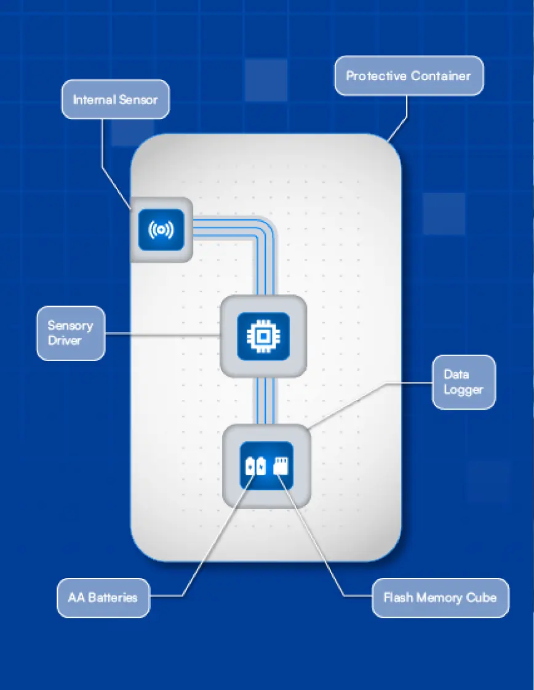
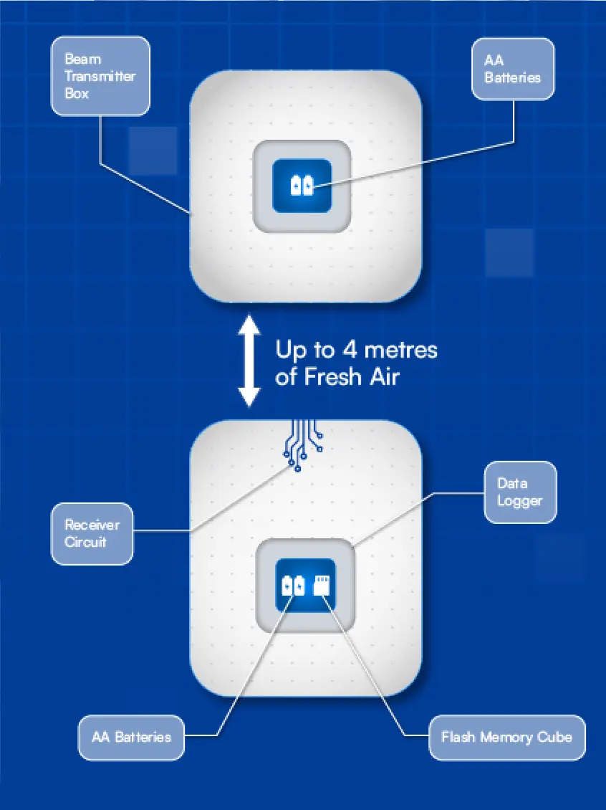
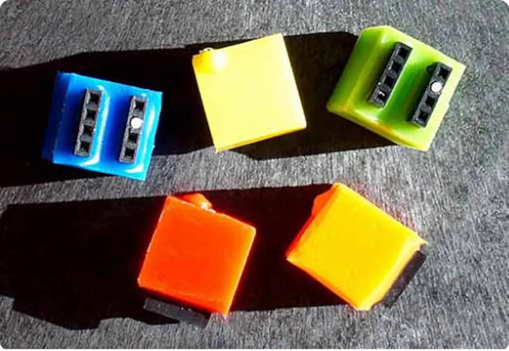
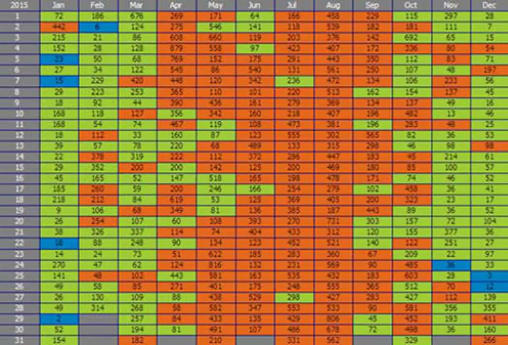

Choosing the Right Location for Visitor Counters
The success of any visitor monitoring project depends on where and how you place your counters. Careful planning ensures accurate visitor data, longer equipment life, and reliable insights.
Why Count Visitors?
Accurate visitor data helps landowners, parks, and property managers
- Measure footfall and usage patterns
- Track seasonal or daily fluctuations
- Anticipate wear and tear to plan maintenance
- Assess the impact of investment, marketing, or event
- Provide evidence for planning applications or public inquiries
Where to Place Counters ?
Location is everything. Counters should be installed where
visitor behaviour is consistent and predictable. Avoid
entrances, cafes, car parks, or areas where people pause, as
this leads to false counts. Instead, position counters further
along paths, trails, or building thresholds where movement is
steady. For cyclists and walkers, choose points where they are
committed to the route (e.g. after a trailhead or beyond
obstacles). On roads, avoid junctions or barriers—install
counters along stretches of continuous flow.
Ensuring Accurate Counts:
- Fluid traffic: Narrow paths or single-file sections produce more reliable results.
- Sensor type: Break-beams, pressure slabs, and body-heat sensors each suit different environments.
- Directional data: In special cases, directional counters track arrivals or departures, confirming system accuracy.
Concealment and Security
To protect both data quality and equipment, counters should be discreet. Visible sensors may attract tampering or alter visitor behaviour. Options include:
- Burying pressure sensors in paths
- Concealing body-heat sensors in walls, posts, or gates
- Housing loggers in secure, hidden enclosures
- Using unobtrusive street fixtures in urban settings


Key Takeaway
Effective visitor monitoring starts with smart placement. By
installing counters where traffic is predictable, fluid, and
discreetly observed, you ensure accurate data that informs better
management, funding, and long-term planning.
Anatomy of Visitor Counters
Linetop visitor counters are built for outdoor reliability and accurate data collection. Each system typically includes:
- Sensor (people, cyclists, or vehicles)
- Data logger (with batteries and removable flash memory)
- Protective housing (often a Pelicase or secure metal box)
Sensors are installed in locations where visitor movement is consistent, while loggers are concealed or secured nearby, often underground or in weatherproof casings.
Outdoor Counters with External Sensors
For roads, trails, and car parks, sensors such as magnetometers or body-heat detectors can be buried or hidden in natural features like walls or stones. Cables connect them to a nearby logger, discreetly concealed for durability and vandalism protection.

Outdoor Counters with Internal Sensors
Some sensors are mounted inside robust housings—such as metal boxes fixed to street signs—making them fast to install and resistant to tampering. These are ideal for urban environments where equipment can blend into street infrastructure.
Indoor Counters
Indoors, break-beam sensors are placed on either side of doorways, or body-heat sensors are mounted on lintels to detect visitors as they pass. These quick-install solutions work well for entrances, narrow corridors, or retail spaces.

Key advantages
- Durable: Weatherproof and vandal-resistant
- Discreet: Hidden within natural or built structures
- Accurate: Configurable for people, bikes, or vehicles
- Flexible: Suitable for outdoor trails, car parks, buildings, and events
Data Handling with Linetop Counters
Linetop makes it easy to capture, store, and analyse visitor
data—turning raw counts into actionable insights for site management,
funding, and reporting.
Smart Data Processing
Visitor behaviour isn’t always straightforward—stiles, gates, or speed bumps can trigger multiple detections for a single person or car. Linetop data loggers solve this by interpreting sensor signals intelligently.
- In free-flow locations, one detection = one visitor.li>
- In restricted areas, loggers apply timed delays to ensure slow or repeated movements still count as a single visitor.
- This flexibility ensures accurate footfall data that reflects real activity, not sensor noise.
Flash Memory Storage
Each logger contains a removable flash memory cube that stores visitor counts. Operators simply swap cubes during site visits, with the used cube taken back to the office for download. Loggers also include checks to confirm correct setup and functioning.

Downloading to PC
Data is transferred via a Memory Cube Reader connected by USB. With Linetop’s Numero app, visitor data is displayed as daily or hourly totals in chart or spreadsheet format. Operators can apply site codes, calibration factors (e.g. halving counts for vehicles recorded both ways), and check for consistency across weekends, holidays, and seasons.
Analysing with EcoPC
All visitor data is centralised in the EcoPC database, regardless of how many counters are deployed. EcoPC provides:
- Calendar views: colour-coded daily activity, highlighting trends and anomalies.
- Queries and reports: create tables, charts, and comparisons across sites, car parks, or visitor centres.
- Flexible timeframes: view data by day, week, month, quarter, or year.
- Export options: copy charts and tables into Word, Excel, or PowerPoint for reports and presentations.

From Raw Data to Insights
By combining smart loggers, secure storage, and user-friendly analysis tools, Linetop turns raw visitor counts into clear evidence—helping you track trends, compare sites, and demonstrate value to funders, stakeholders, or planners.